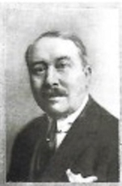

André Saint-Léger (1870 – 1947 ou plus?)
Marguerite Delemer (1876 - 1953)
Contexte historique : le Nord industriel
La période qui s’étend de 1870 à la veille de la Seconde Guerre mondiale est marquée par de profonds bouleversements politiques, économiques et sociaux.
La guerre de 1870 et la chute de Napoléon III
La guerre franco-prussienne se termine par la défaite française à Sedan et la chute de Napoléon III, ouvrant la voie à la Troisième République.
« Napoléon III se battait avec les Prussiens et capitule à Sedan le 25 septembre 1870. » – André Saint-Léger
La répression de la Commune de Paris en 1871 et l’instauration d’un régime républicain stable mais fragile façonnent la société française, qui tente de se reconstruire après des années de conflits et de tensions politiques.
L’essor industriel du Nord et de Lille
Dans le Nord de la France, et particulièrement à Lille, l’industrie textile occupe une place centrale dans la vie économique et sociale. Depuis le XIXᵉ siècle, la région est un bassin majeur de filatures de lin, coton et laine.
Les entreprises familiales se multiplient et structurent les quartiers urbains, tandis que l’essor du chemin de fer et la mécanisation permettent une production plus rapide et favorisent l’expansion des sociétés locales. Lille devient une ville où le prestige des familles industrielles se reflète dans leurs hôtels particuliers et dans leurs investissements pour la ville et le bien-être de leurs ouvriers.
La Première Guerre mondiale (1914-1918)
La Première Guerre mondiale constitue un traumatisme majeur pour la région. Lille est occupée par l’armée allemande, et de nombreuses filatures subissent réquisitions et destructions partielles.
Malgré cela, de nombreux industriels s’engagent dans la reconstruction de leurs usines dès la fin du conflit.
L’entre-deux-guerres (1918-1938)
Dans les années 1920, le Nord connaît une période de prospérité relative, marquée par la modernisation des filatures et le développement de logements ouvriers, construits par les familles industrielles pour leurs employés. Ces initiatives illustrent le rôle social que ces familles entendent jouer dans le maintien de leur main-d’œuvre et dans la structuration des villes industrielles.
L’économie textile du Nord reste fragile. La crise économique mondiale de 1929 affecte profondément les filatures et oblige certaines familles à restructurer ou céder leurs entreprises.
La réussite industrielle repose sur la capacité à allier innovation technique, gestion prudente et maintien du prestige familial. Lille et le Nord deviennent ainsi le théâtre d’une histoire industrielle riche, où ambitions familiales, évolution sociale et bouleversements politiques se croisent.
André Saint-Léger (1870 – 1947 ou plus ?)
Naissance et enfance dans un contexte de guerre
André Saint-Léger naît en 1870 à Tournai, en Belgique, alors que le canon tonne à Lille. La France est en guerre contre la Prusse et Napoléon III capitule à Sedan. La guerre franco-prussienne bouleverse la vie des familles industrielles du Nord, qui doivent parfois se réfugier à l’extérieur des villes menacées.
Mon beau-père Saint-Léger naquit à Tournai car on entendait le canon à Lille. Napoléon III se battait avec les Prussiens et capitule à Sedan le 25 septembre 1870. – Agnès Wattinne, 1985
André grandit dans cette atmosphère troublée, fils d’une génération encore marquée par la guerre et la reconstruction industrielle. Sa famille conserve un lien fort avec Lille, centre économique et social du Nord.
Un homme attaché au prestige et à l’apparence
Agnès Wattinne, sa belle-fille, décrit un homme affable mais profondément préoccupé par son rang social :
Mon beau-père était très aimable mais très orgueilleux et vaniteux. Il se faisait appeler le Comte Saint-Léger, peignait des armoiries sur les portes de ses carrosses.
Il habite un remarquable hôtel particulier au 107 rue Royale à Lille, adresse associée à l’élite bourgeoise. Ses voitures à chevaux – break, victoria, coupé – témoignent elles aussi du statut qu’il entend affirmer dans la vie publique et mondaine de Lille.
Mariage et famille
Le 11 avril 1896, André épouse Marguerite Delemer. Ensemble, ils auront trois enfants : Claude, notre grand-père, Pierre, qui sera maire de La Madeleine, et Marthe, qui s’est mariée avec Lucien Crépy.
Responsabilités industrielles : de la rue des Tours à La Madeleine
Dans une lettre, André relate l’histoire de l’ancienne usine paternelle :
Son usine était dans Lille, 32 rue des Tours à Lille. Cette usine a été vendue par mon frère (Pierre) et par moi au Mont de Piété… À cette époque, nous avions remplacé cette vieille usine par une filature de lin à la Madeleine.
Cette décision s’explique : construite « vers 1800 », l’usine de la rue des Tours est devenue trop ancienne, trop exiguë et techniquement dépassée pour les exigences de la filature mécanisée. La famille choisit donc de bâtir une installation moderne à La Madeleine.
La Première Guerre mondiale : destructions et reconstructions
La guerre de 1914-1918 frappe directement l’industrie du Nord. L’usine d’André est lourdement touchée :
Cette usine avait été très endommagée par la guerre…
La période qui suit est marquée par la reconstruction. C’est aussi le moment où de grands groupes régionaux commencent à absorber les filatures familiales fragilisées.
La vente à Agache : un tournant stratégique
Face à ces réalités économiques, André vend la filature à Édouard Agache, figure majeure de l’industrie textile régionale :
… et mon beau-père la vendit à M. Édouard AGACHE, père de Donat AGACHE, moyennant deux places d’administrateurs : pour lui et pour Claude.
Cette vente n’est pas un retrait : elle ouvre à André une seconde carrière comme administrateur des Établissements Agache. Claude, son fils, y siège également.
Mon beau-père André SAINT LEGER, avait une usine de filature de lin située à la Madeleine. Cette usine avait été très endommagée par la guerre et mon beau-père la vendit à M. Édouard AGACHE, père de Donat AGACHE, qui avait une usine à Pérenchies, moyennant deux places d'Administrateurs : une pour lui et une pour Claude (son fils).
M. AGACHE fit entrer dans la Société ses deux neveux René et Max DESCAMPS. Et tout le monde s'occupa de reconstruire les usines. – Agnès Wattinne
Déclin personnel et fin de vie à Paris
La réussite industrielle contraste avec la dégradation progressive de sa vie personnelle. Vers 1922, André et Marguerite achètent une belle propriété à Hermaville, mais son comportement met peu à peu en péril la fortune familiale :
En 1934 environ, tout fut revendu car mon beau-père dilapidait toute sa fortune avec des femmes dans les bars. Ma belle-mère et Claude n’ont rien pu faire.
Au sein des Établissements Agache, son autorité décline également :
Vers 1940 on lui retira la signature des Établissements Agache.
La fin de sa vie est solitaire et discrète :
Il finit sa vie à Paris, à l’hôtel. On lui envoyait de l’argent tous les mois.
Marguerite Delemer (1876–1953)
Marguerite naît en 1876 dans une France encore traumatisée par la guerre de 1870. Son père, Adolphe Delemer, est revenu du conflit blessé et tuberculeux. Cette fragilité familiale marque fortement l’enfance de Marguerite, qui grandit au Château de Rouge, dans l’Aisne, entourée de femmes et presque sans scolarité formelle.
Son père, Adolph Delemer, aurait été blessé au poumon pendant la guerre de 1870… Ma belle-mère était très jeune quand son père mourut. Elle n’allait jamais en classe, et resta avec sa mère et des grands-mères au Château de Rouge près de Chauny.
Elle lisait beaucoup, retenant tout et était très cultivée.
Cette éducation domestique, faite de lectures plutôt que d’école, donne à Marguerite une culture solide et une grande assurance sociale. Très jeune, elle épouse André Saint-Léger, et s’intègre immédiatement dans la bourgeoisie lilloise. Son milieu, ses amitiés et ses loisirs témoignent d’un mode de vie aisé : chasse, golf, séjours d’hiver à Cannes, déplacements en voiture à chevaux jusqu’à Fort-Mahon.
Elle jouait au golf, elle chassait… elle allait en voiture à chevaux avec relais de chevaux à Hesdin. À partir de Montreuil, il n’y avait plus que des chemins de sable.
Contrairement à la légèreté apparente de ces loisirs, Marguerite s’investit aussi dans la vie scientifique régionale. Elle participe à la création de l’Institut Pasteur de Lille, au moment où la recherche médicale connaît une expansion majeure dans le Nord.
Elle s’occupe de fonder l’Institut Pasteur de Lille et était très amie avec le Dr Calmette et Guérin…
Résistante pendant la Première Guerre mondiale
La Première Guerre mondiale change brutalement le cours de sa vie. Lille est occupée, et Marguerite, restée sur place, s’engage dans des actions clandestines : aide à l’évasion, transmission de messages, observation des mouvements militaires. Elle finit par être arrêtée et déportée en Allemagne.
Pendant la guerre 14-18 ma belle-mère est restée à Lille. Elle avait été obligée de loger un général allemand, ce qui ne l’empêcha pas de faire de l’espionnage. Elle aidait les jeunes à s’évader, elle faisait passer des lettres et des renseignements sur l’emplacement des canons et les mouvements de troupes.
Elle fut arrêtée et emmenée prisonnière à Holzminden en Allemagne, 6 mois je crois. Elle revint très fatiguée et commença à avoir des périodes de dépression.
La cité Marguerite Saint-Léger
Après l’armistice, elle participe activement à la reconstruction, notamment des cités ouvrières, ce qui correspond parfaitement au rôle social des grandes familles industrielles du Nord dans les années 1920.
En 1918, elle s’occupa de la reconstruction des cités ouvrières des Établissements Agache… Il y a encore une cité ouvrière à Pérenchies qui s'appelle « cité Marguerite SAINT-LEGER ».
Mais les années suivantes sont assombries par la vie personnelle d’André, ses absences, ses dettes, et l’effondrement progressif de la situation familiale. Marguerite, déjà fragilisée physiquement et psychologiquement par la guerre, multiplie les séjours de repos.
Elle était très sévère avec ses deux enfants aînés… et très faible avec Philippe.
La conduite de mon beau-père la rendit malade et elle fit de fréquents séjours à Divonne…
Elle meurt en 1953, après une vie marquée par l’aisance, la culture, la guerre, et un engagement social réel.
Hermaville : un domaine, un refuge, un échec
L’achat du domaine d’Hermaville s’inscrit dans un mouvement typique de la bourgeoisie industrielle du Nord au début des années 1920. André et Marguerite Saint-Léger acquièrent, vers 1922, un vaste domaine près d’Arras.
Vers 1922, mes beaux-parents achetèrent une belle propriété près d’Arras, à Hermaville. Il y avait un château, une ferme et un bois. Ma belle-mère organisait de très belles chasses.
À Hermaville, Marguerite déploie un art de vivre façonné avant-guerre : organisation de chasses, réception d’amis, gestion du domaine. Mais ce projet rural s’inscrit dans une période instable. Les années 1920 restent économiquement fragiles dans le Nord textile.
Agnès Wattinne résume ce naufrage sans détour :
En 1934 environ, tout fut revendu car mon beau-père dilapidait toute sa fortune avec des femmes dans les bars. Ma belle-mère et Claude n’ont rien pu faire. Mon beau-père était d’un caractère faible.

Les Établissements Agache : un acteur de premier plan dans l’industrie textile du Nord
La dynastie Agache commence modestement. En 1824, Donat Agache, un Lillois, ouvre un commerce de lins et de fils dans la rue du Croquet. Quatre ans plus tard, cette petite affaire devient une filature de lin.
L’entreprise prend rapidement de l’ampleur. En 1849, Agache rachète une petite usine à Pérenchies, qui devient le centre de son activité. La firme continue de croître et ajoute un second site à La Madeleine-Berkem vers la fin du XIXᵉ siècle.
Une des premières de ces grosses firmes industrielles qui font la richesse du Nord.
Après 1918 : reconstruction et intégration des Saint-Léger
La guerre détruit les installations à Pérenchies comme à la Madeleine. En 1920, Agache rachète la filature d’André Saint-Léger à La Madeleine. La vente est accompagnée de deux sièges au conseil d’administration : un pour André, un pour son fils Claude.